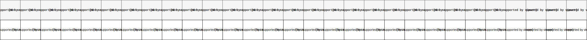

Program for i dag
- Vi skal lave øvelser med
- N-grammer
- Opgave 1: Caesar-cipher
N-grammer
- Bogstaver eller ord
- Simpel model for hvordan et sprog ser ud
- Bruges når vi vil vide sandsynligheden for en sekvens
- https://web.stanford.edu/~jurafsky/slp3/ (draft af 3. udgave, men 2. udgave findes på biblioteket)
- Kryptologi
Opgave 1: Caesar-cipher
I denne skal vi lave kode og dekode hemmelige beskeder skrevet i "Caesar-cipher"

Caesar-cipher
- Blev angiveligt brugt af Cæsar til at kode hemmelige beskeder
- Simpel bogstav-for-bogstav udskiftning

- "HELLO WORLD!" → "EBIIL TLOIA!"
Caesar-cipher
"HELLO WORLD!" → "EBIIL TLOIA!"

Caesar-cipher
Kode beskeder ("HELLO WORLD!" → "EBIIL TLOIA!"):
- Vælg en key, som indikerer hvor langt frem eller tilbage der rykkes
- Find placeringen i alfabetet på bogstavet du vil kode
- Læg denne placering sammen med den key du har valgt
- = placeringen på bogstavet i 'cifferet'
Caesar-cipher
Kode beskeder ("HELLO WORLD!" → "EBIIL TLOIA!"):
- key: -3
- Alfabet:
- Kode "H": 8 + (key) = 8 + (-3) = 5 = "E"
- Kode "A": 1 + (-3) = -2 = ???
- Hvis den nye placering er under 1, skal længden af alfabetet lægges til
Caesar-cipher
Dekode beskeder ("EBIIL TLOIA!" → "HELLO WORLD!"):
- Vælg en key, som indikerer hvor langt frem eller tilbage der rykkes
- Find placeringen i alfabetet på bogstavet du vil dekode
- Minus denne placering med den key du har valgt
- = placeringen på bogstavet decifreret
Caesar-cipher
Dekode beskeder ("EBIIL TLOIA!" → "HELLO WORLD!"):
- key: -3
- Alfabet:
- Dekode "E": 5 - (key) = 5 - (-3) = 8 = "H"
- Dekode "Å": 29 - (-3) = 32 = ???
- Hvis den nye placering større end alfabetets længde, skal længden af alfabetet trækkes fra
Opgave 1: Caesar-cipher
- Lav en funktion som kan kode beskeder i Caesar-cipher
- Lav en funktion som kan dekode beskeder i Caesar-cipher
- (eller lav én der kan begge dele)
- Funktionen(erne) kan
- tage 2 input: en streng og en key
- returnerer den kodede/dekodede streng
- I kan bruge følgende som alfabet:
alphabet = "abcdefghijklmnopqrstuvwxyzæøå".upper()
In [1]: code = Caesar_encode("HELLO WORLD!", -3)
In [2]: print(code)
Out[2]: 'EBIIL TLOIA!'
In [3]: code = Caesar_encode("HELLO WORLD!", 5)
In [4]: print(code)
Out[4]: 'MJQQT ØTWQI!'
In [1]: code = Caesar("HELLO WORLD!", -3, "encode")
In [2]: print(code)
Out[2]: 'EBIIL TLOIA!'
In [3]: text = Caesar(code, -3, "decode")
In [4]: print(text)
Out[4]: 'HELLO WORLD!'
Opgave 1: Caesar-cipher
- Se om I kan dekode hvilken julesang der gemmer sig i "hemmelig.txt" på Absalon